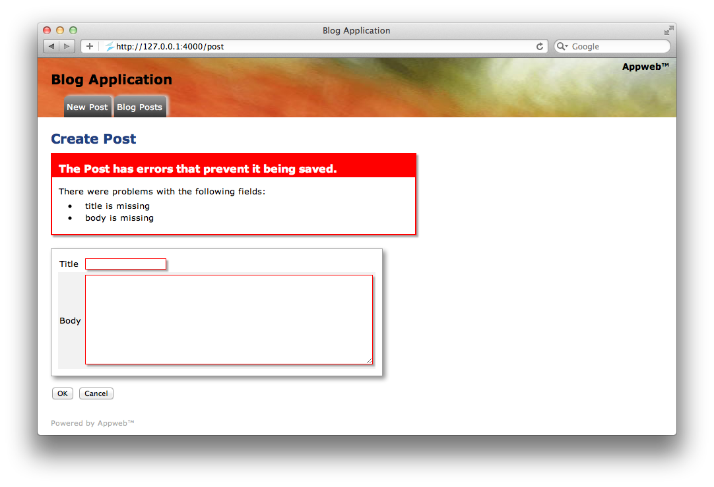

Quick Nav
See Also
Embedded Database Interface
ESP includes powerful relational database support. The Embedded Database Interface (EID) is an Appweb database interface above configurable database backends. ESP supports a variety of database backends including: SQLite, MySQL and MDB to cover various scale requirements. The MDB database is a tiny, in-memory database — great for embedded applications. SQLite is a full SQL implementation for embedded applications, while MySQL is an enterprise class SQL server. MDB is the smallest and fastest, but has the least features.
The EDI interface provides a consistent way to interface with database data, without worrying about the specifics of the chosen database backend. EDI provides functions for the typical Create, Read, Update and Delete (CRUD) semantics. It also provides functions to manage man manipulate database schema.
Fields, Records and Grids
Programs interact with the EDI using EDI Records. When a record is read from the database, EDI extracts the database data and copies it into an EdiRec structure. This structure efficiently stores data with database scheme information necessary for data formatting and display.
The EdiRec representation wraps a database record and allows you to use object-oriented programming (OOP) when dealing with tabular database data. While not a full Object Relational Mapper (ORM), the EdiRec representation is an effective and compact representation that is well suited for use in web applications where you are rendering database tables in web pages. In the Model-View-Controller (MVC) parlance, you can consider the EdiRec representation as the "Model" in MVC.
An EdiRec structure has an array of fields (EdiField), one for each column in the corresponding database table. EdiFields stores data as strings to make it easy to display and render in web pages. All EDI APIs that get or set field data always operate on strings. The underlying database backend may store data in more compact forms using native data types.
When an EDI API needs to return multiple records an EdiGrid structure is used which contains one or more EdiRec structures.
Columns to Properties
EDI dynamically determines the column names in database tables and creates fields in the EdiRec structure at run-time that correspond to each database column. You do not need to configure or specify the fields in your code.
Quick Tour of EDI
Assume we have a database with a product table that has columns for id, name, description, and price.
| id | name | description | price |
|---|---|---|---|
| 1 | Ball | Bouncing ball | 7.50 |
| 2 | Hat | Sun Hat | 27.50 |
By convention, the database table and columns should be lower case. EDI assumes and requires that database tables will have a primary key column named id.
The following code demonstrates some typical uses:
/* Open the database */
Edi *db = ediOpen("store.mdb", "mdb", EDI_AUTO_SAVE);
/* Read the first product */
EdiRec *product = ediRec(db, "product", "1");
/* Set the price to $7.00 and save back to the database */
ediSetField(product, "price", "7.00");
ediUpdateRec(db, product);
/* Find products costing over $10.00 */
EdiGrid *products = ediReadWhere(db, "product", "price", ">", "10.00");
/* Read all products */
EdiGrid *products = ediReadTable(db, "product");
/* Get the number of rows and columns in the table */
ediGetTableSchema(db, "product", &numRows, &numCols);
/* Remove the product with id == 1 */
ediDeleteRow(db, "product", "1");
Data Types
EDI maps database types to the corresponding "C" language data types. The following type conversions will occur when reading and writing data to and from the database.
| EDI Type | MDB Type | SQLite Type | MySQL |
|---|---|---|---|
| Blob | Blob | ||
| Boolean | Boolean | Tinyint | Tinyint |
| Date | Date | Date | Date |
| Float | Float | Float | Float |
| Integer | Integer | Real | Decimal, Real |
| String | String | Text | Text |
| Text | Text | Text | Text |
Database Connections
Database connections are one of the few items that are setup by configuration files. The Appweb configuration file: "appweb.conf" defines the database name, username, password, and other configuration parameters via the EspDb configuration directive.
EspDb mdb://test.mdb
Creating Database Tables
If creating an MVC application, The esp command can be used to create database tables for you:
esp generate table [field:type ...]
If field:type pairs are supplied, columns will be created for the specified type. The valid EDI database types are: binary, bool, date, float, int, string and text.
Create, Read, Update and Delete (CRUD)
It should be easy to do simple things like implementing the basic database operations: create, read, update and delete. EDI makes this easy.
Create a new Record
To create a new table record:
product = ediCreateRec(db, "product");
ediSetFields(product, ediMakeHash("{ \
name: 'Race Car', \
description: 'Bright red race car', \
price: '19.99',
});
ediUpdateRec(db, product);
That will create a new product, initialize its properties, and save it to the database.
Reading a Record
Reading a record from the database is done with the ediRead family of Record static methods. The basic ediReadRec method will return a record with a given id field. Other read methods include: ediReadRecWhere, ediReadTable and ediReadField.
product = ediReadRec(db, "product", "2"); product = ediReadRecWhere(db, "product", "price", "<", "5.0");
Updating a Record
To update a record, first read it using one of the find methods. Then update any of the object properties. Finally, call the save method to save the changes to the database.
product = ediReadRecWhere(db, "product", "name", "==", "Ferarri"); ediSetField(product, "description", "458 Spider"); ediUpdateRec(db, product);
Deleting a Record
Records have a static method remove which will remove the record with the given primary key id.
ediDeleteRow(db, "product", "1");
Accessing Records from Web Pages
ESP web pages can access database data via three methods:
- Direct API calls
- Database Record Binding
- Controller Directed Access
Direct API Access
In direct model access, ESP web pages or controllers query the database using EDI APIs which return EdiRec instances. They then directly access field values using ediGetField.
<p>Price: <%= ediGetField(product, "price"); </p>
Database Record Binding
To make it easy to display and update database data, ESP supports "data binding" where an EDI database record can be bound to a request form. Thereafter, the ESP web controls will take data from that record.
A record is bound by passing a record instance to the form ESP control. ESP then defines it as the current record until the next endform is encountered. ESP controls can then use the current record as a data source.
<%
form(userRecord, 0);
input("name", 0);
input("address", 0);
button("commit", "OK", 0);
buttonLink("Cancel", "../index.esp", 0);
buttonLink("Delete", "destroy.esp");
endform();
%>
In this example, the form control binds the userRecord. The input controls then retrieve the "name", and "address" fields from the database record and emit the appropriate HTML input elements.
Controller Directed Access
When using the ESP MVC application support, controllers will frequently read a record, prepare some data for viewing, and then invoke a view to render a response. In this pattern, the controller defines a "current" database record which can then be used by views to conveniently display field data.
To make this easy, ESP supports an inline "@#" directive. If the controller defined a current product record, this example would render the product price.
<p>Price: @#price</p>
Record Validation
EDI can validate fields before saving records to the database. It provides a set of pre-defined validation routines that cover the most common validation needs such as ensuring a field is unique or numeric, or conforms to a specific format.
When a validation check fails, an error message is added to the record for the field that failed validation. Validation checks continue and (potentially) a set of error messages for the record are accumulated. ESP pages can access these messages for display and highlighting input fields bound to that field. The standard ESP view controls intelligently use these error messages to highlight errors in input forms.
Validation Methods
Validations are typically defined by the ediAddValidation call in the load initialization routine for a controller. This happens one when the controller is first loaded and after that database has been opened.
ESP_EXPORT int esp_controller_post(EspRoute *eroute, MprModule *module)
{
Edi *edi = eroute->edi;
ediAddValidation(edi, "present", "user", "name", 0);
ediAddValidation(edi, "number", "user", "account", 0);
ediAddValidation(edi, "unique", "user", "account", 0);
ediAddValidation(edi, "format", "user", "phone", "/\d{3}-\d{7}/");
return 0;
}
The following validation methods are available for use:
- boolean—tests if the field has a valid boolean value
- format—tests if the field matches a supplied regular expression
- integer—tests if the field has a valid integer value
- number—tests if the field has a valid numeric value
- present—tests if the field is defined with a non-empty value
- date—tests if the field has a valid date/time value
- unique—tests if the field is unique in the database
Custom Validation
You can define new validation routines via the ediDefineValidation call.
Learn More ...
To learn more, please read:
You may also like to ask questions at the Appweb Support Forum.